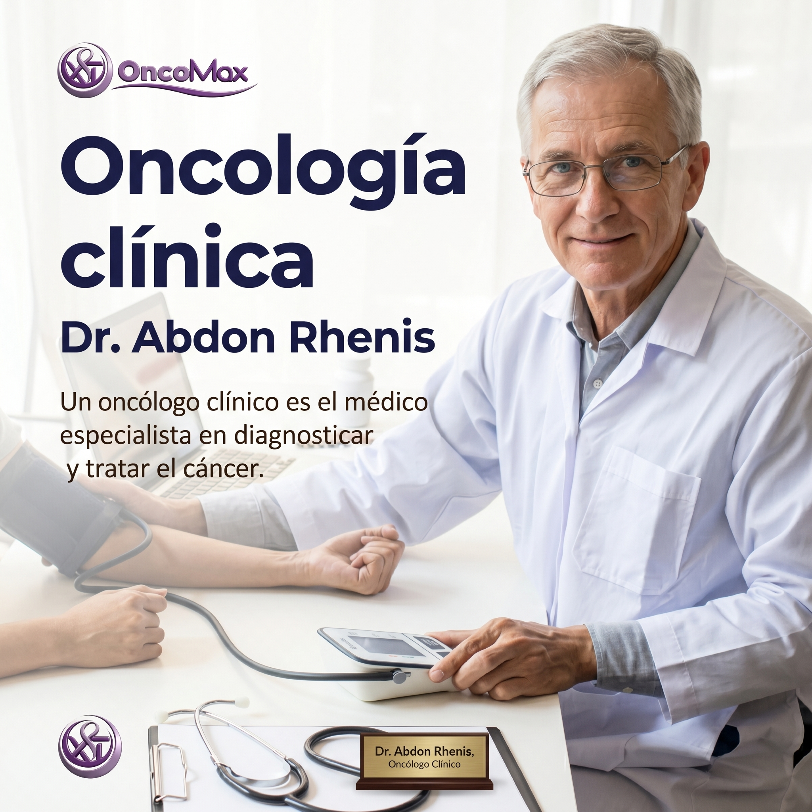

Dr. Abdon Vargas
Oncologia medica
Ver biografiaDr. Abdon Vargas
Especialidad: oncologia medica.
Historia: medico de la clinica OncoMax, enfocado en orientar a pacientes y familias durante el proceso de atencion.
Enfoque: explicar los pasos del tratamiento con palabras claras y acompañar con respeto.